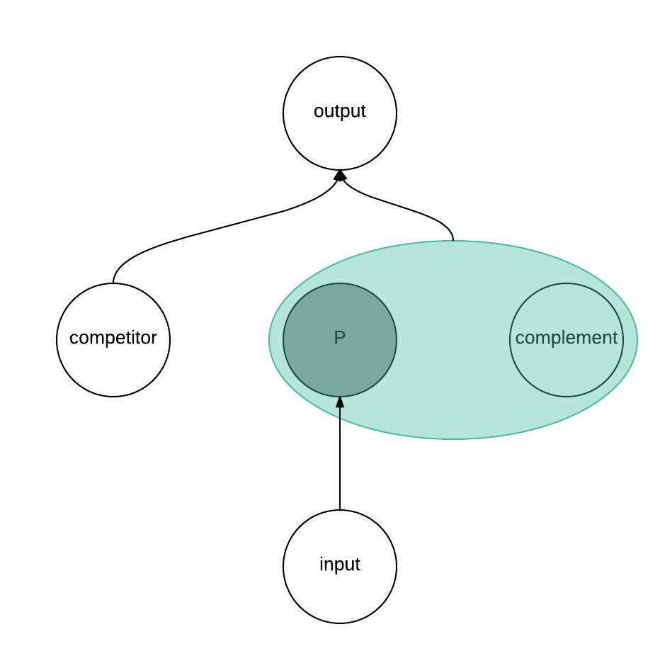
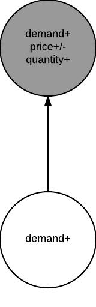
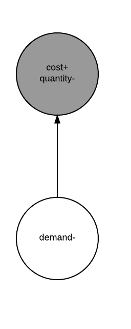
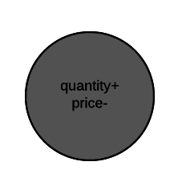
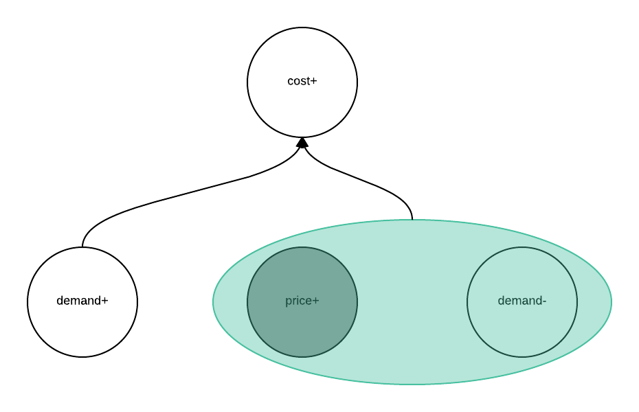
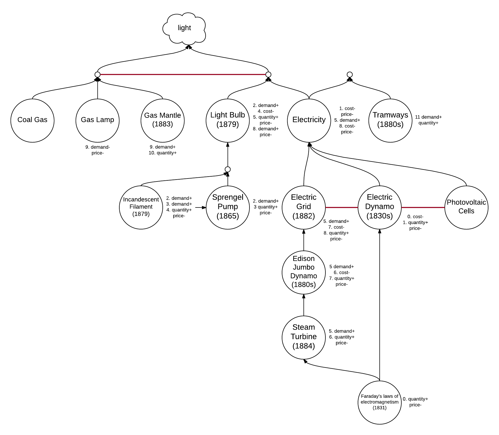

Opportunity
Table of Contents
Introduction
A product opportunity is a a product that doesn't exist yet, but would be profitable if it did. This essay answers the question of how these emerge by introducing a novel model called the product graph, which extends neoclassical economics to derive cost and demand curves from relationships with other products in the economy.
Existing Work
New products don't have to come from startups, but they often do, and the conversation around new products is so often focused on startups that this is where we must look for existing work.
It turns out there's not much there. Some authors do talk about how to find good ideas, but they don't say much about how good ideas arise in the first place. In Zero to One, Peter Thiel writes that the new ideas are the "valuable companies that no one is building." This is vacuously true. It's more of a definition, almost identical to the one I gave for "product opportunity" above. It doesn't say much. What makes a product profitable? How does it become profitable? Why are new products profitable when they weren't before?
Paul Graham is probably the most broadly prolific startup author, and he has in fact written an essay on how to find ideas, but even PG hasn't written about that crucial step that comes before getting good ideas - how the opportunity appears in the first place.
In the management theory community, there's Christenson of The Innovator's Dilemma, who covers some specific instances of the catalysts for new products, but stops short of developing a coherent theory.
In economics, elementary supply/demand expositions such as those in Mankiw do cover some of the factors leading to cost and demand, such as price of the factors of production, complements, and substitutes, but this again stops short of deriving the cost and demand curves from these factors, and nothing is said about how changes in this system propagate through the economy to create new opportunities. The other classic economic model related to the ideas in this essay is the Input-Output Matrix, which does chart the relations between different goods, but only at the macro scale of industries, not at the micro scale of individual products.
The industry most directly interested in this topic must be Venture Capital, whose entire M.O. is to identify and invest in new opportunities. But the discourse of VCs is also high-level and imprecise. They talk about "waves", "themes", and "thematic investing", which are real, but only as high-level concepts emerging from a fine-grained model such as the product graph. I expect the VC industry to mature in this regard, and I wouldn't be surprised if a variant of the product graph are already secretly running in the simulation farm for some cutting edge VC.
Product Graph
A product opportunity is a profitable product that doesn't yet exist. A product is profitable if, at some quantity, demand exceeds supply, and since supply is determined by cost, we can equivalently say that a product is profitable when demand exceeds cost.
This means that for a product to become newly profitable, either demand must increase or cost must decrease. That's it. That's how new product opportunities emerge. One or both may happen, but a product can only become viable when these curves shift. This defines two types of new products:
- Newly desirable products. Something increased their demand. These are the products we didn't want before, but do now. No one wanted the light bulb before there were electric generators to power them.
- Newly possible products. Something decreased their cost. A new technique or a new component became available. These are the products we've wanted for a while, but couldn't build. Drivers have wanted electric cars for ages, but they were prohibitively expensive before lithium ion batteries.
To understand the factors that contribute to demand and cost, I now introduce a novel model called the product graph. The product graph is a directed graph, where nodes are products and edges are production relationships. The sources are raw materials such as labor, minerals, and energy sources. The sinks are consumer products. Intermediary nodes are business products including those used for design, manufacturing, and distribution. The following is an informal description of this graph. For a complete set of equations from which the graph is derived, consult this set of functions, written in a mix of Scala and math notation.
Let's start with a single product, P. A product used in the production of P is called an input to P. Economists might call this a factor of production, but my definition is a bit more broad. It includes not only the components used in the product and its manufacture, but also the techniques. This includes hardware manufacturing techniques like assembly-line production and exchangeable parts, as well as software techniques like dependency injection and the observer pattern. It may seem like a stretch to call these "products", as they must be to deserve the status of nodes in the product graph, but it's not as much as you might think. Consider the example of the Raft consensus protocol, which is a distributed systems technique introduced in 2014. It's certainly not a product in the traditional sense, but a software package implementing the protocol would undeniably be a product (with price=0 if it were open source). And since the implementation of a protocol is simply a "rephrasing" of the technique from natural language to formal language, it would be silly to consider one a product but not the other.
The entire set of inputs used to produce P is called a suite. There are likely many suites that could produce P. They compete for P's business, and P will choose the cheapest 1. Members of a suite are complements of each other, and members of competing suites are competitors. These relationships defines the demand and cost curves for each product.
NOTE: You may be thinking that price isn't P's only concern, but also quality. That P will choose not just the cheapest, but also the best suite.. This is a valid point assuming that P can vary in quality, but the product graph as presented in this essay assumes static products, as described in the section on future work. While I assert that this is a sound model, I admit that this isn't typically how we think about products, especially highly dynamic products like modern software, and if I were to continue working on the product graph, dynamic products would be the next phenomenon to tackle.
Cost is simple to compute. For a given quantity of P, P's cost is the price of the cheapest suite that will produce that quantity of P.
Demand is more complex. I again invite you to reference the complete model for the full demand equation, but at a high level, demand goes up when:
- The price of a complement goes down. The product may now take a larger portion of the profit margin allocated to the entire suite.
- The price of a competitor goes up. The product may obtain new outputs now that a competitor is more expensive.
- The demand for an output goes up. If the product has a monopoly on its role in production of the output, this increase in demand transfers to the product.
- The cost of an output goes down. See #3.
If this all seems too abstract, consult the examples section.
A product's inputs and complements share many properties, so we collectively call them partners. We'll also define the price of a non-existent product to be infinite, so if a new product enters the market, we can say that it's price has decreased from infinity to some finite value. With these simplifying definitions, we now have a complete set of three changes to the product graph which may cause a product to become newly profitable:
- demand for an output goes up (may increase demand)
- price of a partner goes down (may increase demand or decrease cost)
- price of a competitor goes up (may increase demand)
cost of an output goes down (may increase demand)
#4 implies #2, so we can remove it.
Propagation
Altogether, there are four properties of a product and its neighbors that define its profitability: cost, demand, quantity, and price. The graphs below show how changes in these properties flow through the economy. Each graph shows local changes only, but one need only to compose the graphs to understand the possible emergent effects.
Demand
Except for theoretical products with perfectly elastic demand, an increase in demand always results in an increase in quantity. And though the conventional rule of thumb is that demand and price are also directly proportional, this isn't always the case. For a product with sufficient economies of scale and sufficiently inelastic demand, an increase in demand may actually decrease price.
Normally, an input's demand is a function of its output's quantity, not its demand, at least not exactly. However, if the input and output don't yet exist, then increasing the demand of the output may increase the demand for an input that will enable production, even though quantity=0.
Cost
Costs going up means marginal cost meets marginal revenue at a lower quantity, and since this intersection determines the quantity a firm will produce, this quantity is reduced.
Quantity
Quantity may increase for many reasons. We saw above that it is inversely proportional to cost. It also increases when the product first lands on the market (zero to one), and continues to rise as production ramps up to meet the firm's most profitable quantity (where marginal cost equals marginal revenue). Regardless of its source, increasing quantity means we traverse down a decreasing demand curve with price decreasing accordingly.
Price
Unsurprisingly, a change in price has the most complex effect on the surrounding economy. It's directly proportional to the demand of both its inputs and competitors, inversely proportional to the demand of its complements, and raises the cost of its outputs.
Examples
This section includes many examples, including at least one for each of the three catalysts described in the product graph section, but by far the most comprehensive is that of electricity, which shows how the introduction of new knowledge, Faraday's laws, triggered changes in the product graph for over a dozen products related to electricity in the 19th century.
electricity
Before the 1830s, the only way to create electricity was chemical - voltaic piles. But in 1831, Faraday demonstrated the link between electricity and magnetism, leading the way to the first electric generators. The next half century saw the market evolve a network of products to produce electricity, and most importantly light.
- 1831 - Faraday's laws of electromagnetism emerge as a new product, which enables the creation of electric dynamos.
- 1830s The first generators are created, bringing down the cost and price of electricity.
- As electricity drops to a reasonable price, demand for light bulbs, its complement and hitherto non-existent product, rises. Bulbs are now in demand, but cost is too high, which in turn increases the demand of the inventions necessary for creating a light bulb.
- Sprengel Pump is invented, making the discovery of an incandescent filament even more valuable. (1865)
- Carbon filament discovered, finally enabling the creation of modern light bulbs. (1879)
- Light bulbs begin to be manufactured, increasing the demand for electricity. This in turn increases the demand for an electric grid, which can provide electricity at much higher economies of scale than a generator. This increase in demand propagates all the way down to a steam turbine. (1879)
- Steam turbine is invented. (1884)
- Edison Jumbo Dynamo is invented, the first dynamo powerful enough to power a city. This drops the cost of an electric grid. (1880s)
- Pearl Street Station opens, dropping the cost and price of electricity. This increases the demand for electricity's complement, the light bulb. Since light bulbs have such high economies of scale, this increase in demand actually reduces the price. (1882)
- The main competitor to the light bulb, the gas lamp, decreases in demand accordingly, increasing the demand for a new complement to the gas lamp - the gas mantle. The gas mantle increase the efficiency and brightness of light from coal gas.
- Gas mantle is invented ensuring the survival of the gas lamp into the next century.
- As quantity, and accordingly price, of electricity fell throughout the 1880s, the demand for electric tramways increased, and they were finally introduced the next decade.
This graph lets us trace the flow of new products. We can see cost savings propagating up, demand increases propagating down, and price changes propagating laterally. This value propagation begins with Faraday, flows up to electricity, over to the light bulb, down to the incandescent filament and back up to the light bulb, over to electricity, all the way down to the steam turbine and back up, then over to the tramway.
3.5" disk drive
For an example of a product's demand increasing from its output's demand increasing, I could have chosen any of the thousands of components comprising the computer stack. They're all inputs to various forms of computers, whose demand has increased precipitously since the 1960s. As Christenson thoroughly cataloged in The Innovator's Dilemma, 3.5" drives emerged to satisfy the growing market for desktop PCs. Desktop PCs themselves saw their demand increase through myriad complements including applications and internet.
VisiCalc
I chose VisiCalc for this example, but any app fits the same pattern. A platform emerges, increasing the demand for apps on its platform. The apps of course had 0 demand before the platform existed.
Tesla
Musk himself has said that what enabled Tesla more than anything else has been affordable lithium ion batteries. They didn't exist until the 70s, and they still aren't at a price point such that they can profitably power a car, but the curve is approaching that level. It's also likely that computerized design (input.price-) and an increased demand from the culture for environmentally friendly cars (output.demand+) were other factors.
SUN
Bechtolsheim is one of my favorite founders due to quotes like this:
"I don't see any risk. To me, SUN was a zero risk startup, because I knew the product would work, right, there was good demand for a lower cost price point, it was just like getting it out the door and selling it…Most good startups don't have high risk."
Ethernet, Unix, and 32-bit processors all arrived right around the same time in the early 80s to enable a product like the SUN workstation. These new inputs alone were enough to make SUN profitable, as outlined in their original and unusually prescient business plan, but it was the explosion in demand after they launched which yielded obscene profit. Their target market was CAD developers at manufacturing companies, but SUN soon learned that products from diverse industries such as banks, transportation, and software development could be improved by having workers collaborate on networked machines.
Firefox
Firefox is a great, rare example of an opportunity emerging in part due to competitors degrading 2. In 2002, browsers were getting worse. In 2002, Internet Explorer was plagued with security vulnerabilities, with customers weary from malware. Mozilla itself was overrun with features and poor UI design brought about by perverse business incentives.
Future Work
The biggest gap in product graph as presented is that it assumes products are static. A changing product is represented as a new product. While this is a sound model, it is highly unintuitive. When a product gains a new feature, we don't think of it as disappearing and being replaced by a new product. We think of the product itself changing. Future work should address this, and add a feature such as "quality", model products as feature vectors.
Another significant unmodelled phenomenon is the production function, or the quantity of outputs a suite produces. In order to determine the set of outputs for a product, we must model what it can produce. This requires a model of the features of a product, such as via a feature vector as described above, as well as the production process. My current perspective is that there are three production processes that must be modeled: The design of the product, the manufacture of the product, and the process by which new designs are created. For software products, the manufacture of a product is trivial, since it simply involves copying the bits.
Culture manifests itself in our model of humans, who exist in the model in two forms: the supply side and the demand side. On the supply side is labor. Humans are just another production input, and can be modeled similarly, with their own inputs such as education and culture affecting their productive capacity. What is currently unmodelled is there role at the top of the graph. All production flows toward consumer products. We could just take the demand for consumer products as given, but we can also go further by recognizing that what's ultimately in demand are human values, such as those you might find on Mazlow's Hierarchy of Needs. Modeling the production function for consumer products, or how they produce these values is quite complex, and often veers into the field of psychology. One of the main aims of commodity advertising is to manipulate this production function.
Lastly, uncertainty is completely unmodeled, but quite important. A firm never fully knows the production function. They don't know if inputs do what they say they'll do. This uncertainty can be modeled as a probability distribution over the features of a product. Products early in their life must find early customers who are either unusually certain of their features for one reason or another, or have a high risk tolerance. As the product proliferates, the market becomes more sure of the advertised claims, and certainty increases. This process is currently modeled by the Technology Adoption Lifecycle.
Related to the production function, switching cost, or the cost of modifying the production process for a new input, is currently unmodelled.
As stated in the introduction, the product graph shows how opportunities emerge, but not how to find those opportunities.
Footnotes:
Suites compete with each other, not individual inputs. A single input may in fact belong to two different, competing suites.
Competitors generally don't degrade in any strict, absolute sense, but they can degrade in some important dimension either from some new threat entering the environment, or by making tradeoffs. Both modes are relevant here.